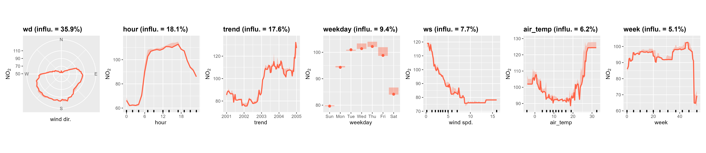

deweather is an R package developed for the purpose of “removing” the influence of meteorology from air quality time series data. The package uses a boosted regression tree approach for modelling air quality data. These and similar techniques provide powerful tools for building statistical models of air quality data. They are able to take account of the many complex interactions between variables as well as non-linear relationships between the variables.
Part of the openair toolkit
|
|
|
💡 Core Features
deweather makes it straightforward to test, build, and evaluate models in R.
Test and build meteorological normalisation models flexibly using
testMod()andbuildMod().Plot and examine models in a myriad of ways, including visualising partial dependencies, using functions like
plotPD()andplot2Way().Apply meteorological averaging using
metSim()to obtain a meteorologically normalised air quality timeseries.
Modelling can be computationally intensive and therefore deweather makes use of the parallel processing, which should work on Windows, Linux and Mac OSX.

📖 Documentation
All deweather functions are fully documented; access documentation using R in your IDE of choice.
?deweather::buildModDocumentation is also hosted online on the package website.
A guide to the openair toolkit can be found in the online book, which contains lots of code snippets, demonstrations of functionality, and ideas for the application of openair’s various functions.
🗃️ Installation
deweather is not yet on CRAN.
The development version of deweather can be installed from GitHub using pak:
# install.packages("pak")
pak::pak("davidcarslaw/deweather")🏛️ deweather is primarily maintained by David Carslaw.
📃 deweather is licensed under the GNU General Public License.
🧑💻 Contributions are welcome from the wider community. See the contributing guide and code of conduct for more information.